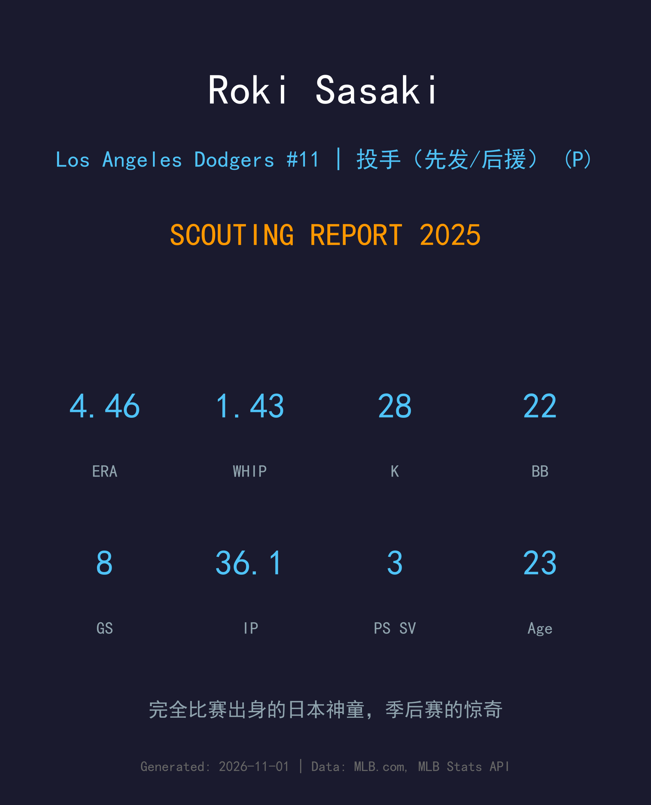
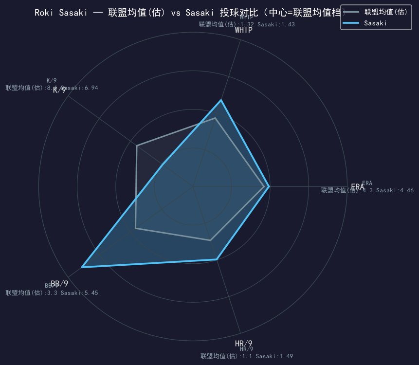
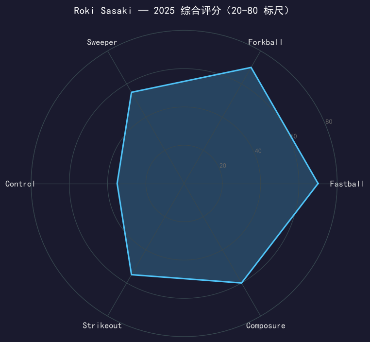

Los Angeles Dodgers #11 | 投手（先发/后援）| 右投 | 完全比赛出身的日本神童，季后赛的惊奇

佐佐木朗希的 2025 年 MLB 处子季，是一个被劈成两半的故事。上半章叫「成长的代价」：BB/9 5.45、三振率仅 6.94，八场先发里他屡次在好球带边缘迷失，完全比赛神童的光环被现实的配球落差敲得粉碎。下半章叫「十月的惊奇」：转入牛棚的他随队打完整段季后赛，18 次登板、3 次救援成功、0.84 自责分率——包括世界大赛舞台。
这颗 96 mph、旋转效率顶级的速球与那颗下坠极深的指叉球（forkball），是他从高中时代就令全日本疯狂的双璧。2025 年的常规赛证明： Stuff 可以漂洋过海，控球必须重新学起。
从 2025 年 11 月的视角看，他的定位悬而未决：先发轮值的未来？还是季后赛已被验证的高杠杆武器？无论哪条路，23 岁的他拥有的时间，和他拥有的天赋一样多。
岩手县大船渡高中时代投出连续 13 局完全比赛，「令和怪物」之名轰动全日本，选秀会上被千叶罗德海洋队第一指名。
4 月 10 日对欧力士野牛投出完全比赛，单场 19 次三振仅用 105 球——日本职棒史上第 16 场完全比赛，21 岁的他一夜之间成为国家英雄。
1 月与道奇签约，3 月 19 日在东京海外开幕战完成 MLB 首秀——从东京巨蛋出道的他，承载了整个日本棒球的期待。
18 次登板为全队最高，3 次救援成功、0.84 自责分率——在世界大赛舞台上，他投出了比常规赛成熟三岁的内容，随队夺得世界冠军。

| 项目 | G | GS | W-L | ERA | WHIP | IP | SO | BB | K/9 | BB/9 |
|---|---|---|---|---|---|---|---|---|---|---|
| 2025（MLB 新人年） | 10 | 8 | 1-1 | 4.46 | 1.43 | 36.1 | 28 | 22 | 6.94 | 5.45 |
注：Sasaki 2024 年效力于日本职棒（NPB），数据口径不同不作直接对比，故以联盟均值（估）为参照系。新人年五边形全部劣于联盟均值——这是 MLB 历史上备受瞩目的跨联盟投手常见的第一年轨迹：速球与指叉的 Stuff 足以立足，但配球精度、打者情报与棒次深度都需要从零积累。
2025 赛季真实配球数据（MLB Stats API pitchArsenal）：
旋转效率与纵旋特性都是联盟顶级 percentile 的天赋级速球——这颗球是他所有故事的起点。在日本，打者已经够不着它；在 MLB，打者不仅能碰到，还会把它打到观众席。速球本身没变，变的是打者。
他的「魔球」，下坠深度极大，2022 年完全比赛的 19K 主力武器。MLB 处子年它的实战效果打折，主要原因是配球时机与好球数落后时的使用模式被对手针对。
赴美后新增的第三武器，横向位移对付左打者效果可期，也是他在牛棚角色里快速找到答案的原因之一。
BB/9 5.45 放在任何级别都是警报。但请注意背景：他从来不是控球型投手——日本时期的威胁建立在「打者知道速球要来却依然打不到」的绝对压制上。MLB 打者的选球纪律迫使他第一次需要「精细地」投球，而精细活正是他技术体系里最薄的一层。好消息是：23 岁，且道奇拥有联盟最好的投手教练组。
牛棚化之后，他的数据脱胎换骨：18 场 0.84 ERA、3 次救援成功。短局数释放了他「全力速球+指叉」的原始模式，不再需要为第五局保留体力，也不再需要第三遍面对同一批打者。这不是退化，是定位的胜利——也抛给了教练组一个幸福的难题。
从发展角度，先发能最大化他的天赋上限（参考他在日本的履历）；从即时战力角度，季后赛已验证他是顶级牛棚武器。2025 年 11 月没有标准答案，但历史站在先发这一边——大谷翔平、Justin Verlander 都证明过：顶级 stuff 值得等待控球的成熟。

天赋天花板极高，控球决定高度
A- 级 / 顶级潜力（发展变量）
道奇 2025 季后赛夺冠之路：外卡 2-0 红人 → NLDS 3-1 费城人 → NLCS 4-0 酿酒人 → 世界大赛 4-3 多伦多蓝鸟。
Sasaki 是这段征程中最大的惊奇：18 次登板全队最高，3 次救援成功、2 次中继成功，10.2 局仅失 1 分（自责分率 0.84）。
佐佐木朗希的 2026 年只有一个技术课题：把好球带变成朋友。道奇会给他先发的机会——他的天赋值得这个耐心——而季后赛的牛棚成功则提供了保底答案。无论最终定位如何，23 岁握有世界冠军戒指与天赋级 Stuff 的投手，历史上没有几位的成长曲线比他更值得期待。
理想剧本：控球成熟后回到轮值，成长为山本之后的二号年轻王牌
现实基准：轮值与牛棚之间摇摆，先以 100-120 局积累 MLB 经验
上行惊喜：若指叉球找回 NPB 形态，直接进入赛扬讨论
佐佐木朗希来自日本岩手县陆前高田市——2011 年东日本大地震的受灾地之一。少年时代的他曾在避难所里度过漫长的日子，棒球是那段岁月里唯一确定的东西。大船渡高中的球场上，他投出了连续 13 局完全比赛，「令和の怪物」的称号从此不胫而走。
2022 年 4 月 10 日，21 岁的他在千叶罗德投出了 NPB 史上第 16 场完全比赛——105 球、19 次三振、无安打无保送。那一天，全日本的目光都落在了这个瘦高的年轻人身上。此后两年，他每一次登板都是全国直播的事件。
2025 年 1 月，他选择了一条更孤独的路：漂洋过海加入道奇，从东京巨蛋开启 MLB 处子赛季。常规赛的挣扎真实而残酷，但十月的他让世界看到了「令和怪物」的本来面目。世界大赛的香槟雨中，23 岁的佐佐木朗希捧起冠军戒指——故事的第一章，结局堪称完美。